Елена Деми-дова
Медиахудожник, перформер, куратор исследовательского проекта «MEDIA BODY MEDIA», Елена работает со словом и телом, изучает мультимодальность сенсорного восприятия, исследует возможности мультисенсорной коммуникации, разрабатывает интерактивные технологические скульптуры и объекты-компаньоны, а также работает в направлении интерактивного медиаперформанса.
Ведет арт-практики и лаборатории (“Тело текста”, “Молчаливые практики” ), преподает на курсе “Арт-коучинг и арт-педагогика” в Московском институте психоанализа.
Участник российских и международных фестивалей с 2009 г.
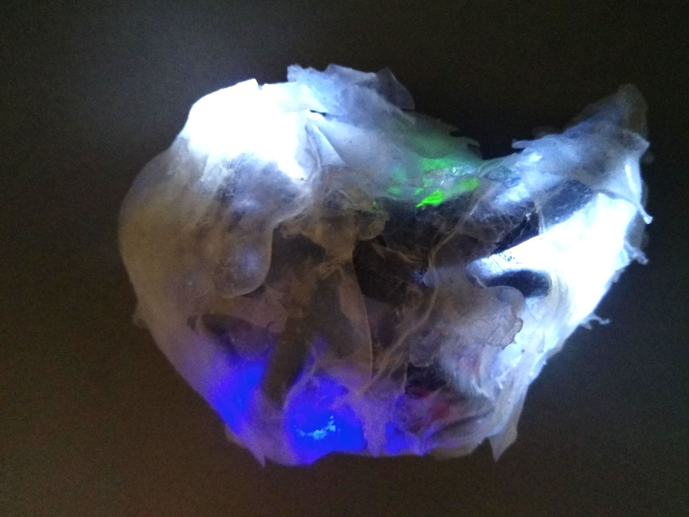 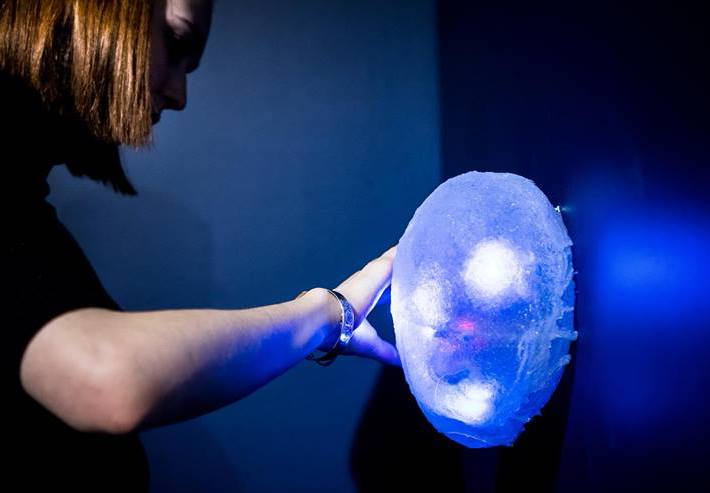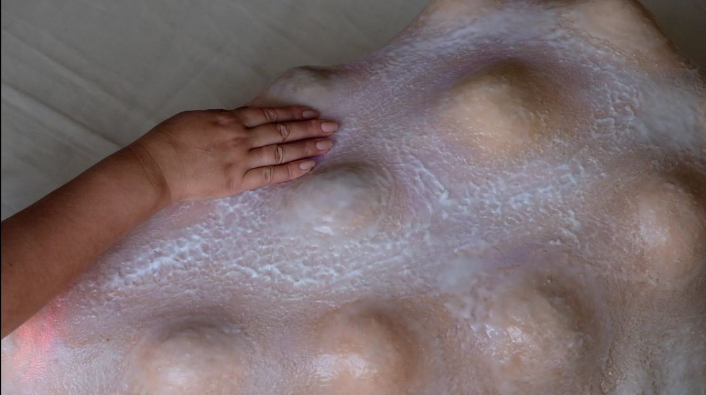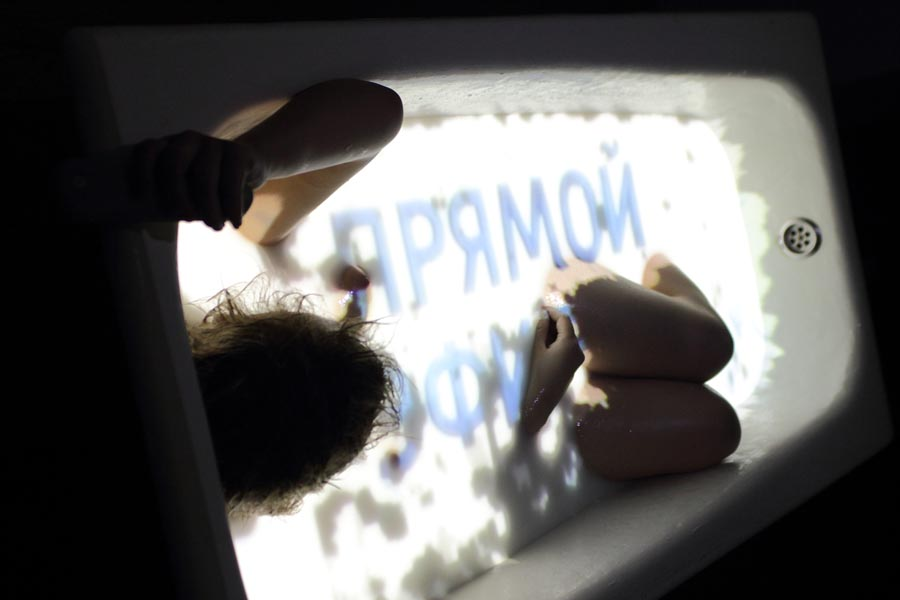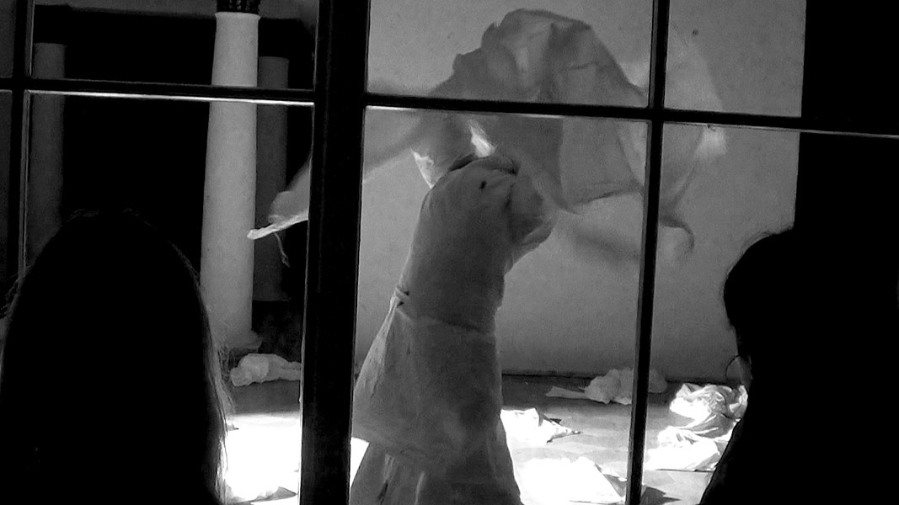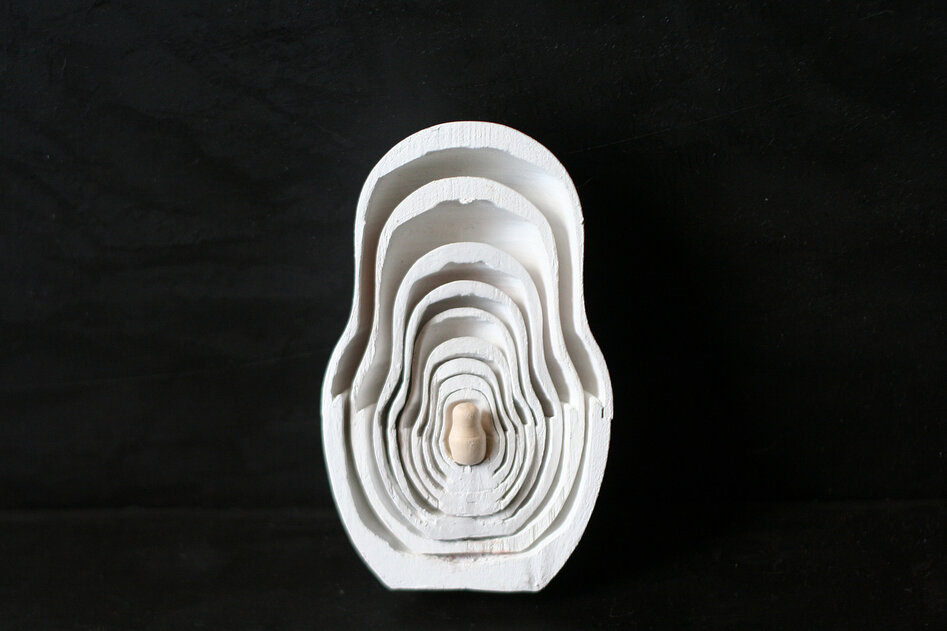
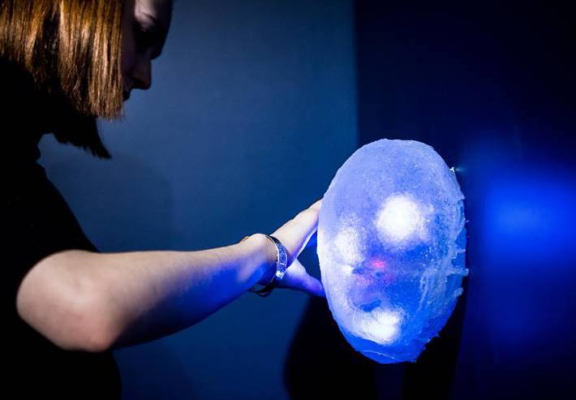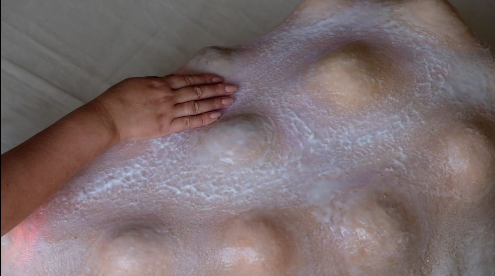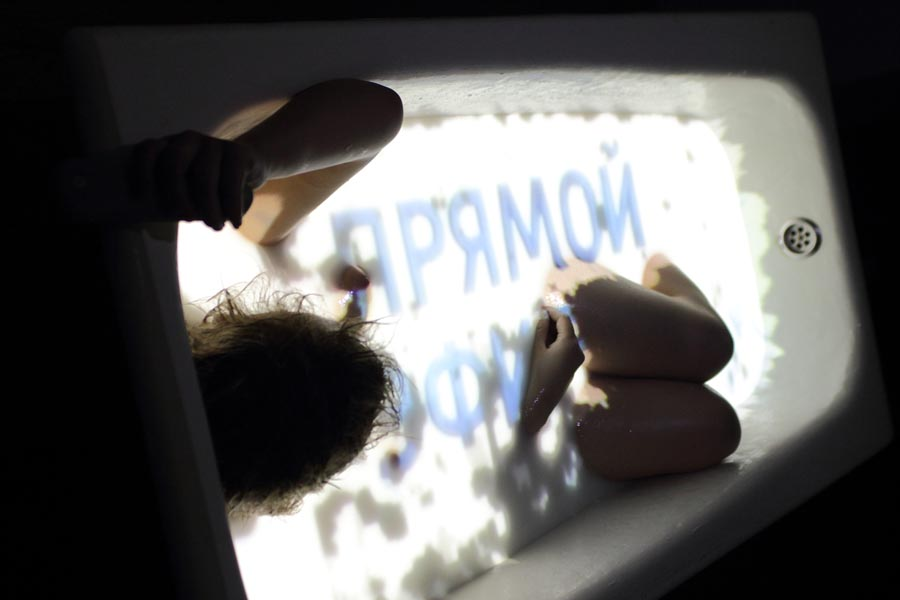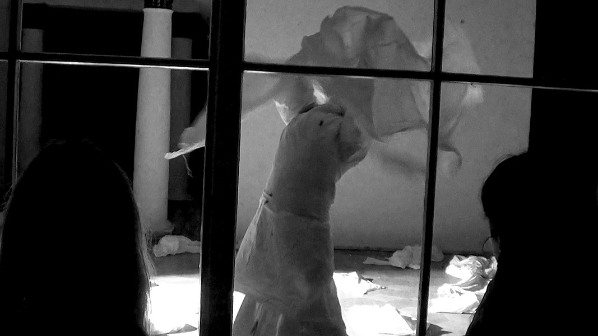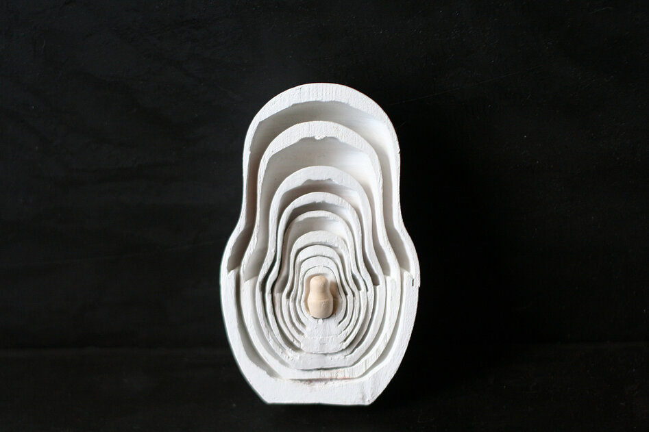 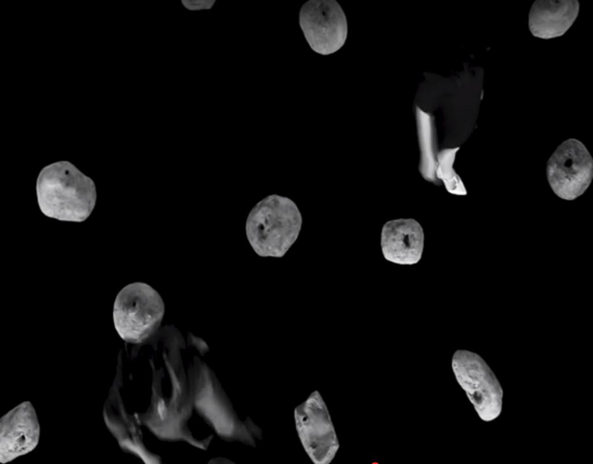
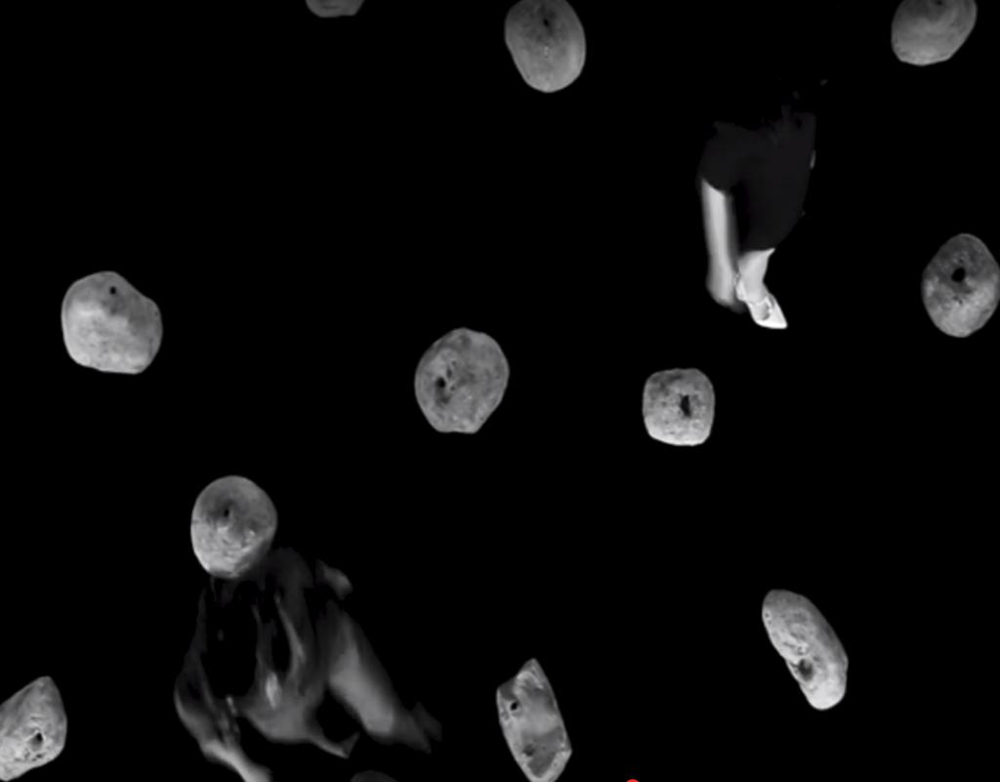
Образование:
- магистратура управления инновациями ВШЭ (темы исследования: инновации и Art&Science, технологии сенсорного замещения, аугментация человека) Москва, 2021
- художественно-графический факультет ПГГУ Москва, 2009
- школа “Свободные мастерские”, лаборатория медиаперформанса, Москва, 2012
Изучала перформанс в лабораториях (2009-2020)
- “Theatrum”, образовательный проект фестиваля “Золотая маска”.
- Мартина Нашбара, Пас Рохо, Реми Ретье, Джеса Куртиса Летней школы ЦЕХ;
- поэтического перформанса Натали Мали, КРЯК, Красноярск,
Призер:
- фестиваля молодой драматургии “Любимовка” в номинации “спорная территория”, Москва, 2017
- шорт-лист международной премии электронной литературы ELO 01, Неаполь, Италия, 2014
- фестиваля медиапоэзии “Вентилятор” в номинации “Перформанс”. Санкт-Петербург, 2009
Избранные художественные проекты:
- “Матрешкаленд”, МОММА, Москва, 2013
- “Мироточение”, Фестиваль перформанса “Игра в классики”, ММОМА, Москва,2013; КРЯК, Красноярск 2014
- интерактивный медиаперформанс «Хочу сказать!», инструмент «Коммуникатор» совместно с Олегом Макаровым, Андреем Андриановым, Сергеем Синодовым, Ириной Иванниковой, Полиной Синевой, Культурный центр ZIL, Москва, 2014
- “Медиадрузья”, “Искусство быть”, ГЦСИ РОСИЗО, 2019
Избранные осуществленные кураторские проекты:
- “Фестиваль медиапоэзии” Открытая сцена, ММОМА, Москва 2013
- “Лаборатория медиапоэзии” Открытая сцена, ММОМА, Москва 2013
- “Медиапоэтические машины” резиденция, галерея-мастерская “Сколково”, Москва, 2013
- “Транскрипция шума”специальный проект 6-й московской международной биеннале современного искусства, Дарвиновский музей, Москва, 2014, ПМЭФ, Санкт-Петербург, 2017
- “Тактильный коммуникатор” проект сайнс-арт московский Политех, Москва, 2017-2019.
- “Свобода и нейротехнологии” Neuro_Science_Art международная конференция Центр нейроэкономики и когнитивных исследований ВШЭ 2021
Публикации:
- 2015 - “Медиапоэзия: как рассчитать технологию вдохновения, выстроить шум в математическом порядке, читать поэзию на ощупь и рифмовать цифры”. “Медиатека и мир” РГБ
- 2020 - со-автор Ксения Федорова, “Qualia Formation through Sensory Substitution in Artistic Laboratories in Russia” Why Senstience? 26th International Symposium on Electronic Arts (ISEA), Montreal